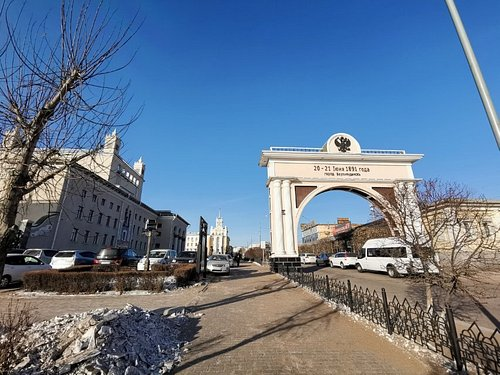

1. Памятник Ленину
2. Лик Богини Янжимы
.jpg)
3. Арбат
.jpg)
4. Триумфальная арка "Царские ворота"

Царевич Николай Александрович, будущий император Николай II, в конце XIX века путешествовал по Восточной Сибири. В городе Верхнеудинске, как раньше назывался Улан-Удэ, в честь приезда высокого гостя в 1891 году построили Триумфальную арку «Царские врата». Деревянная арка архитектора Николая Паув стояла на каменном постаменте, по обеим сторонам располагались сдвоенные полуколонны, а наверху — двуглавый орел с ажурными решетками по бокам. В 1917 году, вместе со свержением царской власти, российский герб сбросили с сооружения, а в 1936 году снесли и саму арку. Ко дню 340-летия города Улан-Удэ в 2006 году Триумфальную арку решили восстановить. В верхней части поместили памятную надпись: «20–21 июня 1891 года — дата приезда в Верхнеудинск цесаревича Николая Александровича». Новые Царские ворота отличаются от предыдущих только размером. Арка стала больше: теперь она достигает 14 метров в ширину и 9 метров в высоту. В остальном новое сооружение стало точной копией Триумфальной арки XIX века, и сегодня оно украшает центральную улицу бурятской столицы.
Памятник Владимиру Ленину в бурятской столице — самая большая монументальная голова Ленина в мире, ее вес превышает 42 тонны. Высота скульптуры — 7,7 метра, вместе с пьедесталом она достигает 14 метров. Идея создания памятника появилась в 1970 году, когда отмечалось 100-летие со дня рождения Ленина, в честь которого, как вспоминают старожилы Улан-Удэ, раньше в городе были установлены три небольших монумента. Градостроители решили заменить их масштабной скульптурной композицией на главной площади. Авторами памятника стали отец и сын — скульпторы Георгий и Юрий Нерода.
Как гласит легенда, у подножия Баргузинских гор, жили две сестры. Одну сестру звали Янжима. Когда Янжима пела у нее звучал мелодичный и волшебный голос, вокруг расцветало и наполнялось энергией жизни. Если приходила в гости в семью, то в этой семье рождалось много детей. Недаром, поклонение богине Янжиме наделяет плодородием, а также с целительной силой – продлевает молодость, лечит болезни и даже избавляет от алкогольной и табачной зависимости. Однажды сестры вознеслись в нирвану и стали небесными принцессами (дакинями). Однако богиня Янжима все-таки решила спуститься на землю, чтобы помогать людям.
Улан-Удэнский Арбатом называют пешеходный участок ул. Ленина — одной из центральных и самых старых улиц Улан-Удэ. Сама улица образовалась при строительстве Одигитриевского собора в 1741 году — она соединяла храм и Нагорную площадь. Так как через улицу пролегал Сибирский тракт, ее называли Трактовой. В 1891 году в честь приезда в город будущего императора Николая II, улица была переименована в Большую Николаевскую, а после смерти основателя Советского государства она получила новое название, которое с тех пор больше не менялось. В 2004 году на участке от ул. Советской до ул. Кирова перекрыли автомобильное движение и, конечно же, назвали его Арбатом по аналогии с пешеходной улицей в Москве.